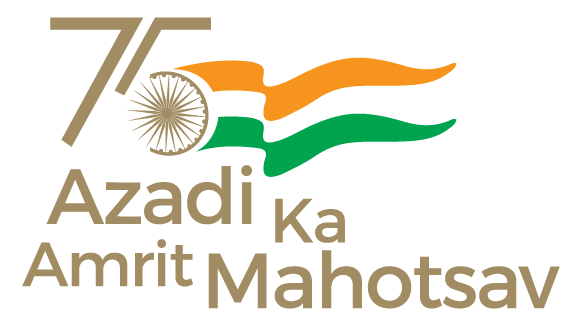

Todays News
National Conference on Cyber Safety and National Security
The nation is celebrating “Azadi Ka Amrit Mahotsav” under the leadership of the Prime Minister, Shri Narendra
Modi, to celebrate India’s progress and achievements in the 75th year of India’s Independence.
A National Conference on Cyber Safety and National Security (Cyber Apradh Se Azadi – Azadi Ka Amrit Mahotsav)
will be held at Vigyan Bhawan in New Delhi tomorrow. The conference is being organized by Ministry of Home
Affairs. The Union Minister for Home Affairs and Cooperation Shri Amit Shah will be the Chief Guest at the
conference. The conference is part of the efforts to create mass awareness for prevention of cyber crimes in
the country.
The Indian Cyber Crime Coordination Centre (I4C), in the MHA in coordination with the Ministry of Culture,
Government of India in the run up to tomorrow’s conference had also organized functions at 75 places in
different States/Union Territories on Cyber Hygiene, Prevention of Cyber Crimes, Cyber Safety and National
Security under the banner “Azadi Ka Amrit Mahotsav” from June 8 to 17.
The Conference will also be attended by the Union Minister for Culture, Tourism and Development of North
Eastern Region Shri G. Kishan Reddy, the Minister of State for Home Affairs Shri Ajay Kumar Mishra and senior
officials of the Ministry of Home Affairs, Ministry of Culture, and from the States and Union Territories and
representatives from various organisations amongst others.
NW/RK/AY/RR
(Release ID: 1835277) Visitor Counter : 159
OI-News 15321
https://www.ourindia.com/index.php/2022/06/national-conference-on-cyber-safety-and-national-security/
AUTHOR: GANARI
RECOMMENDED FOR YOU
Swachh Bharat 2.0: NITI Aayog – UNDP hold 1st capacity building workshop for Maharashtra and Goa ULB’s on
Sustainable Management of Plastic Waste Management
Swachh Bharat 2.0: NITI Aayog – UNDP hold 1st capacity building workshop for Maharashtra and Goa ULB’s on
Sustainable Management of Plastic Waste Management
Khadi Monumental National Flag to be displayed at Longewala Tomorrow on Army Day
Khadi Monumental National Flag to be displayed at Longewala Tomorrow on Army Day
PM dedicates Pragati Maidan Integrated Transit Corridor project
PM dedicates Pragati Maidan Integrated Transit Corridor project
President of India pays floral tributes to Dr. Zakir Hussain on his birth anniversary
President of India pays floral tributes to Dr. Zakir Hussain on his birth anniversary
Newer Post
National Workshop to deliberate over ‘Vision for an effective, speedier and hassle free Consumer Dispute
Redressal’
Older Post
English rendering of PM’s address at Gujarat Gaurav Abhiyan in Vadodara
President Biden to Nominate Dr. Arati Prabhakar to Lead Office of Science and Technology Policy
Press Release: Bill Signed: S. 1097, S. 2520, and S. 3823
Adopt Yoga for 365 days to build healthy body, mind as healthy individuals build healthy nations: Shri Anurag
Thakur
COVID - 19 Vaccination Update - Day 522
Income Tax Department conducts searches in Rajasthan and Mumbai
Shri G.Kishan Reddy inaugurated Jyotirgamaya-A festival showcasing the talent of unsung performers today
Implementation of the Uyghur Forced Labor Prevention Act
Ministry of Food Processing Industries inviting applications under sub-schemes of Pradhan Mantri Kisan Sampada
Yojana (PMKSY)
Shri G Kishan Reddy and Shri Ashwini Vaishnaw flag off the Bharat Gaurav Tourist Train operating on the
Ramayana Circuit from Delhi Safdarjung Railway Station today
Statement by NSC Spokesperson Adrienne Watson on Changes to U.S. Anti-Personnel Landmine Policy
FACT SHEET: Changes to U.S. Anti-Personnel Landmine Policy
Civilians Killed in Ethiopia
Union Minister Dr. Jitendra Singh inaugurates seismological observatory at Udhampur
Union Ayush Minister Shri Sarbananda Sonowal hails the International Day of Yoga a success; expresses
gratitude to Prime Minister Shri Narendra Modi for his pivotal leadership in promoting Yoga globally
Skill India organizes Pradhan Mantri National Apprenticeship Mela in 10 districts of Odisha
